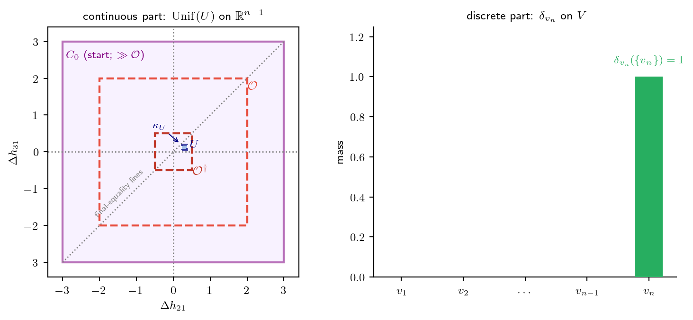

연구 ▷ HST ▷ 기준측도 ν_skel = Unif(U) ⊗ δ_vn 읽기
설정: \(n\)개 노드 그래프 위 HST의 round skeleton \(\{S_{t_r}\}\). 상태공간 \(\bar{\mathcal{X}} = \mathbb{R}^{n-1} \times V\) (높이차 벡터 + walker 위치). Doeblin minorization의 기준측도가 \(\nu_{\mathrm{skel}} = \mathrm{Unif}(U) \otimes \delta_{v_n}\).
H. \(\nu_{\mathrm{skel}} = \mathrm{Unif}(U) \otimes \delta_{v_n}\) — 이게 뭐야? 기호가 세 개나 붙어 있는데.
G. 이건 측도 하나다. Doeblin minorization에서 “어디서 출발하든 결국 여기로 모인다”는 그 공통 도착 분포. 풀어 읽으면 “\(U\) 위 균등분포 \(\otimes\) \(v_n\)에 박힌 점질량.”
먼저 무대를 알아야 한다. round skeleton의 상태공간은
\[\bar{\mathcal{X}} = \mathbb{R}^{n-1} \times V.\]
상태 \(s\)는 두 좌표로 되어 있다 — 높이차 벡터 \(\Delta_1\mathbf{h} = (\Delta h_{21}, \ldots, \Delta h_{n1}) \in \mathbb{R}^{n-1}\) (연속, \(\Delta h_{ij} := h(v_i) - h(v_j)\))과 walker 위치 \(X \in V\) (이산). \(\nu_{\mathrm{skel}}\)은 이 두 좌표 각각에 분포를 하나씩 지정한다.
H. 그럼 \(\mathrm{Unif}(U)\)부터. \(U\)가 뭐야?
G. \(U\)는 chamber — 높이차 공간 \(\mathbb{R}^{n-1}\) 안의 작은 컴팩트 영역이다. 위치는 \(U \Subset \mathcal{O}^\dagger = \{|\Delta_1\mathbf{h}|_\infty < b/16\}\), 즉 원점 근처 아주 작은 박스 안.
\(\mathrm{Unif}(U)\)는 “이 \(U\) 위에 퍼진 균등분포”다. 높이차 좌표에 대해서는 연속적으로 골고루 도착한다는 뜻. 왜 균등이 가능하냐면 — \(nL\)번의 fall이 각각 \(\mathrm{Unif}(0, b)\) 독립 deposit을 공급해서, 높이차 벡터에 \((n-1)\)차원 Lebesgue 밀도를 만들어내기 때문이다. 그 밀도가 \(U\) 위에서 바닥값 \(\geq m_*\)를 갖는다.
H. chamber라는 이름이 왜 붙었어? 그냥 작은 박스면 box라고 하지.
G. \(\mathcal{O}^\dagger\) 안에서 “final-equality 초평면”을 피한 영역이라서 따로 이름을 줬다. flow step의 downstream 비교 \(h(u) \leq h(X)\)가 등호가 되는 경계 — 거기서는 walker의 tie-break이 불안정해진다 (degenerate comparison). \(U\)는 그 위험한 등호 초평면에서 거리 \(\kappa_U\)만큼 떨어져 있도록 잡은 “안전한 방(chamber)”이다. 그래서 \(U\) 위에서는 모든 비교의 부호가 robust하게 유지된다.
H. 이제 \(\delta_{v_n}\). 이건 점질량이지?
G. 맞다. \(\delta_{v_n}\)은 노드 \(v_n\)에 100% 몰린 Dirac 점질량. walker 좌표 \(X\)에 대해서는 “무조건 \(v_n\)”이라는 뜻.
왜 하필 \(v_n\)? minorization 증명에서 fall-target 사건을 잡을 때, \(L\)번의 사이클로 \(v_1, v_2, \ldots, v_n\) 순서로 fall이 떨어지게 강제한다. 그러면 마지막 (\(nL\)번째) fall이 항상 \(v_n\)에 착지한다. skeleton의 끝점이 fall 시각이므로, 도착 상태의 walker는 결정적으로 \(X^{\mathrm{end}} = v_n\). 그래서 이산 좌표는 퍼지지 않고 한 점 \(v_n\)에 박힌다.
연속 좌표(높이차)는 골고루 퍼지고, 이산 좌표(walker)는 한 점에 못박힘 — 이 비대칭이 핵심이다.
H. \(\otimes\) (텐서곱)은 그럼 두 좌표를 따로 본다는 뜻이야?
G. 정확히 곱측도(product measure). \(\nu_{\mathrm{skel}}\) 아래에서 두 좌표가 독립이라는 뜻이다. 임의의 영역 \(B \subseteq U\)에 대해
\[\nu_{\mathrm{skel}}(B \times \{v_n\}) = \mathrm{Unif}(U)(B) \cdot \underbrace{\delta_{v_n}(\{v_n\})}_{=\,1} = \mathrm{Unif}(U)(B),\]
그리고 \(v_n\)이 아닌 다른 노드에는 0. 그림으로 보면 곱 구조가 한눈에 들어온다.
왼쪽(연속)은 \(U\) 위에 균등하게 퍼지고, 오른쪽(이산)은 \(v_n\) 하나에만 솟는다. \(\nu_{\mathrm{skel}}\)은 이 둘의 곱이다. 왼쪽 패널의 옅은 보라 사각형 \(C_0\)(실선=닫힘)는 출발영역으로, 실제로는 \(\mathcal{O}\)보다 훨씬 크다(\(M_0 \gg b/4\)) — 프레임에 맞추려 줄여 그렸다. “\(C_0\) 어디서 출발해도 원점 근처 작은 \(U\)를 덮는다”가 한 그림에 담긴다.
H. 그래서 \(P_{\mathrm{skel}}^{nL}(s, \cdot) \geq \eta\,\nu_{\mathrm{skel}}\) 전체가 의미하는 게 뭐야?
G. “\(C_0\) 안 어느 출발점 \(s\)에서 시작하든, \(nL\)라운드 뒤의 분포에는 똑같이 생긴 덩어리 \(\eta\,\nu_{\mathrm{skel}}\)이 공통으로 들어 있다”는 것.
\[\forall s \in C_0: \qquad P_{\mathrm{skel}}^{nL}(s, \cdot) \;\geq\; \eta \cdot \bigl[\mathrm{Unif}(U) \otimes \delta_{v_n}\bigr].\]
\(\nu_{\mathrm{skel}}\)은 그 공통 덩어리의 모양, \(\eta > 0\)는 그 크기(질량). 양화사 순서가 포인트다 — \(\exists\eta\,\forall s\) (출발점 무관 공통 바닥)이지, \(\forall s\,\exists\eta\)가 아니다.
이게 있으면 두 출발점을 같은 무작위성으로 coupling할 수 있다 — 확률 \(\eta\)로 둘 다 \(\nu_{\mathrm{skel}}\)에서 똑같이 뽑혀 합쳐진다(regeneration). 그래서 \(C_0\)가 small set이 되고, Foster drift와 합쳐져 positive Harris recurrence \(\Rightarrow\) 유일 정상분포 \(\Rightarrow\) \(SD^2_{ij}(t)/t \to c_{ij}\) (balanced regime)로 이어진다.
H. 한 줄 요약.
G. \(\nu_{\mathrm{skel}}\)은 skeleton 도착의 공통 기준측도 — 높이차는 chamber \(U\) 위 균등(\(nL\) fall이 만든 연속 밀도), walker는 마지막 fall이 떨어지는 \(v_n\)에 점질량, 둘은 독립곱. “어디서 출발해도 이만큼(\(\eta\))은 이 모양(\(\nu_{\mathrm{skel}}\))으로 겹친다”가 Doeblin minorization의 전부다.